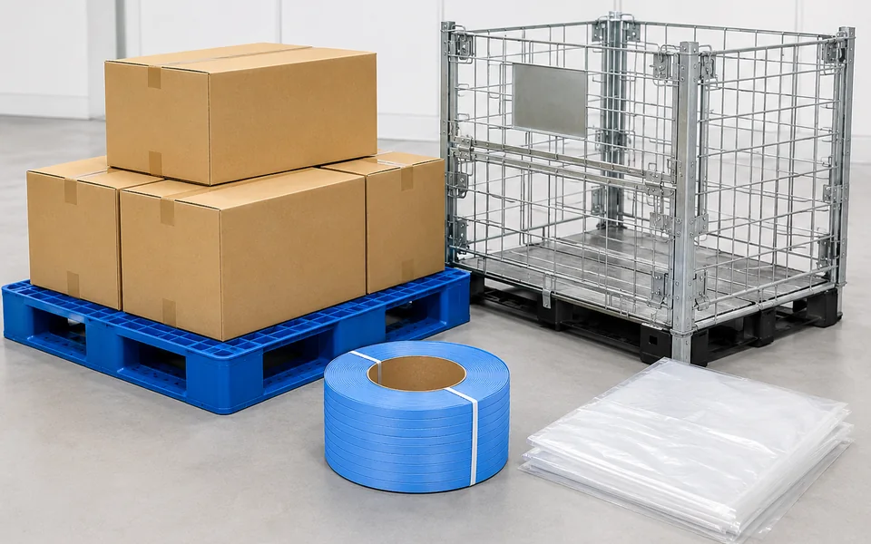
01
物流・包装資材の販売
プラパレ、PPバンド、ポリ袋、段ボール、各種テープ、緩衝材、ネステナーなど幅広く対応。長年の取引実績と協力会社ネットワークを活かし、定番品から特殊品まで柔軟に調達・ご提案します。
取扱品目を見るLOGISTICS & PACKAGING
パレット・包装資材の販売から、営業倉庫での保管・梱包・入出庫まで。
九州の物流を、現場の手前から支えています。
豊富な取扱品目と
長年の経験を活かし、
最適な物流・包装資材を
ご提案します。
物流・包装事業部は、素材を問わない各種パレットや包装資材の販売に加え、福岡・佐賀・熊本に展開する営業倉庫で、お客様の荷物の保管から梱包・入出庫までをお引き受けしています。
2026年2月には、国道3号線沿いに新しい物流拠点「FLC山鹿」が完成しました。資材の調達から倉庫まで、ひとつの窓口でご相談いただけます。
営業倉庫福岡・佐賀・熊本
FLC山鹿の延床面積2026年2月 竣工
合志倉庫2023年10月 完成
営業倉庫の認可第6784号
SERVICE

プラパレ、PPバンド、ポリ袋、段ボール、各種テープ、緩衝材、ネステナーなど幅広く対応。長年の取引実績と協力会社ネットワークを活かし、定番品から特殊品まで柔軟に調達・ご提案します。
取扱品目を見る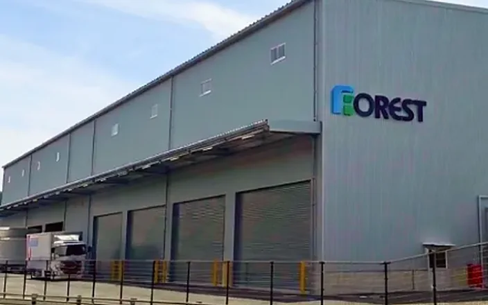
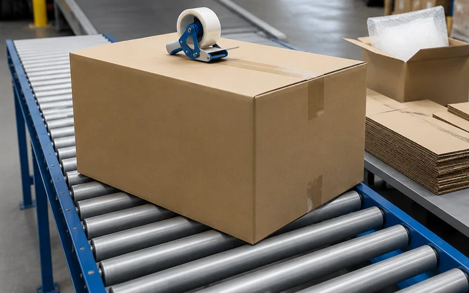
お預かりした荷物の梱包作業から入出庫・在庫管理までをワンストップで対応します。配送は子会社カリクと連携し、九州・中国地方へお届けします。
PRODUCTS
定番品から特殊品まで、現場に合わせてお選びいただけます。
掲載のない品目も、お気軽にご相談ください。
載せる・積む・保管する
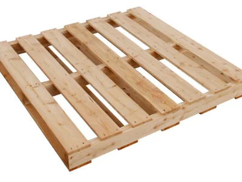
木製パレット
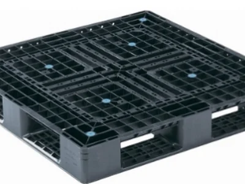
プラスチックパレット
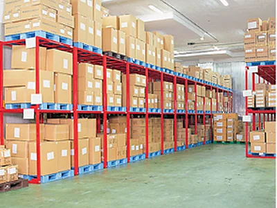
保管ラック
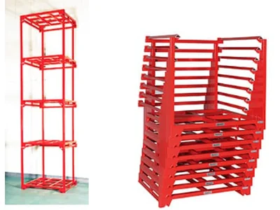
ネステナー
包む・束ねる・封をする
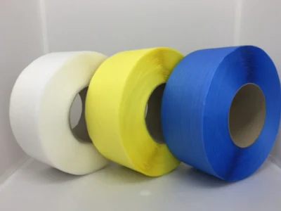
PPバンド
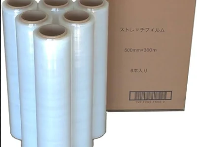
ストレッチフィルム
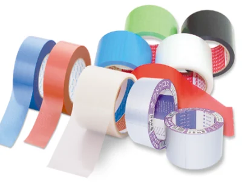
各種テープ
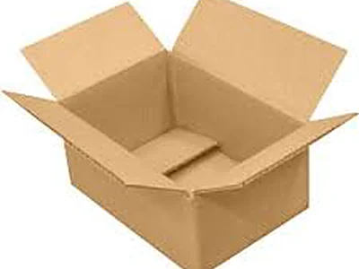
段ボール
守る・崩さない・知らせる
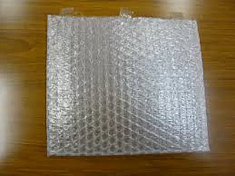
気泡緩衝材
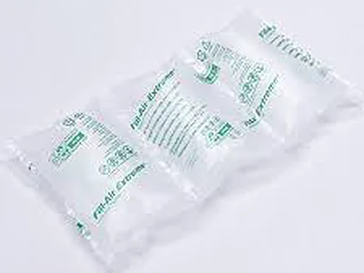
エアクッション
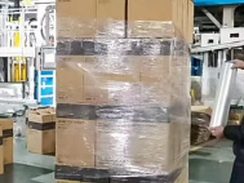
荷崩れ防止梱包
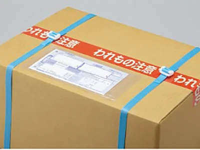
ケアマークテープ
このほか、ポリ袋・フック・パレティーナなども取り扱っています。
GROWTH
2011年の営業倉庫認可から、拠点を一つずつ増やし、
九州の物流を支える体制を整えてきました。
2011.12
物流事業を本格的にスタート。ここから倉庫網の整備が始まりました。
開始営業倉庫業
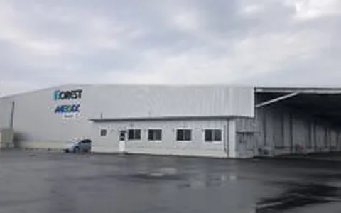
2023.10
合志市栄団地内に完成。活性化するシリコンアイランド熊本の拠点のひとつです。
規模1,500坪
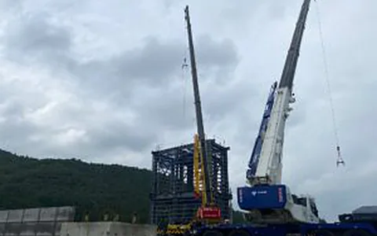
2025.07
山鹿市鹿北町の国道3号線沿いで着工。基礎工事から鉄骨建方へと進みました。
構造鉄骨造2階建て
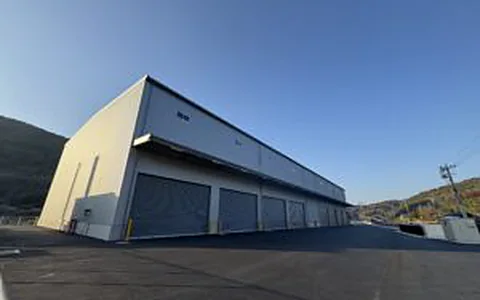
2026.02
「フォレストロジスティクスセンター山鹿」として完成し、稼働を始めました。
延床5,544㎡
NEW BASE
フォレストロジスティクスセンター山鹿
2026年2月13日、計画どおり無事に完成しました。鉄骨の強度を増したことで柱を減らし、倉庫内の動線を広く確保。山鹿に根ざす新しい物流拠点として、本格的に稼働を始めています。
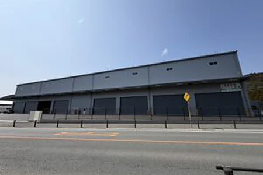
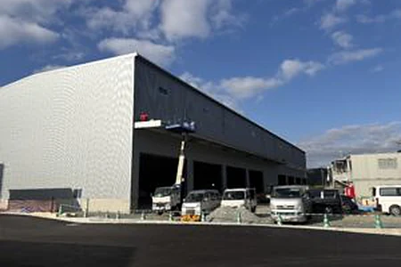
WAREHOUSES
空き状況や保管条件は拠点ごとに異なります。お気軽にお問い合わせください。各倉庫の写真と所在地は事業所一覧へ
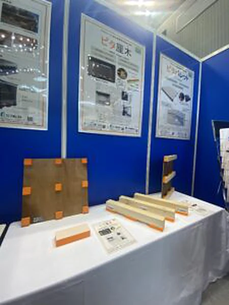
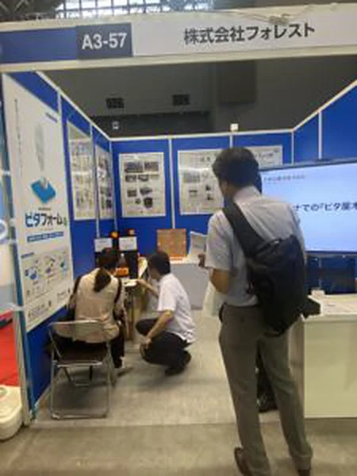
NEW PRODUCT
フォレストの新製品「ピタパレット（PITA PALET）」。2025年10月、第1回「九州次世代物流展」に初出展し、その防振性能を実際にご覧いただきました。さまざまな業種の方々からいただいたご意見を糧に、物流の現場に役立つ製品づくりを進めています。